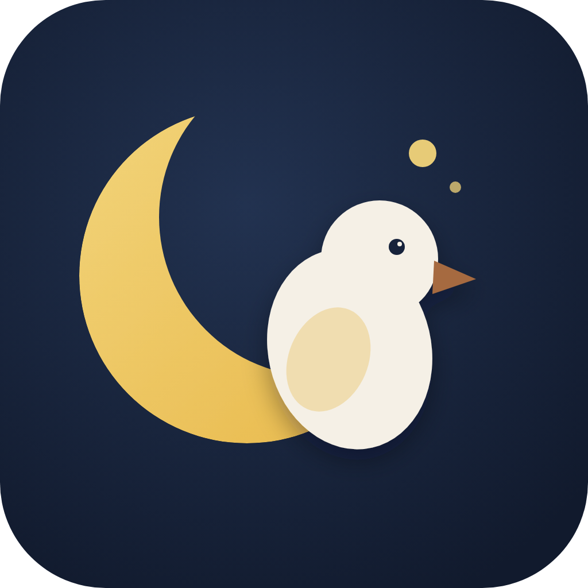

Granja Luna
@GranjaLunaPY
Crianza avícola familiar en Paraguay. Pollitos caseros y Brahma, aprendizaje, selección y vida real en Granja Luna. 🐣
Portada editorial compuesta · pendiente de aprobación

Crianza avícola familiar en Paraguay. Pollitos caseros y Brahma, aprendizaje, selección y vida real en Granja Luna. 🐣
Portada editorial compuesta · pendiente de aprobación